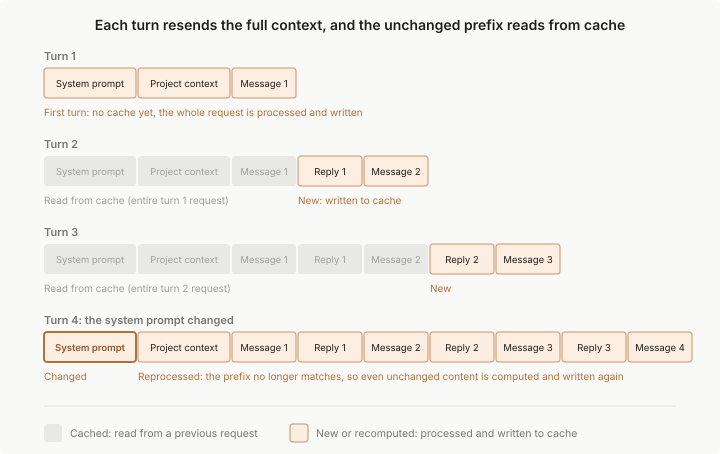

Prompt Caching
Claude Code 自动管理 prompt caching
了解为什么模型切换会触发缓慢的未缓存回合、/compact 的成本 为什么 CLAUDE.md 编辑在会话中期不适用，以及如何检查缓存命中率
Prompt caching 使 Claude Code 更快、更经济高效
- 没有缓存，API 会在每个回合重新处理您的完整历史记录
- 有了缓存，它会重用已经处理过的内容，只对更改的部分进行新工作
Claude Code 为您处理 prompt caching，除非您禁用它
了解 prompt caching 的工作原理仍然很有用，因为某些操作会使缓存失效，使下一个响应更慢、更昂贵，同时它重建缓存
本页涵盖哪些操作会这样做、为什么某些设置等待重启才能应用，以及当使用量看起来很高时如何检查缓存性能
缓存的组织方式
每次在 Claude Code 中发送消息时，它都会发出新的 API 请求 模型在请求之间不记得任何东西，所以 Claude Code 重新发送完整的上下文：系统提示、您的项目上下文 每条先前的消息和工具结果，以及您的新消息。新内容附加在末尾，这意味着每个请求的大部分与前一个请求相同
Prompt caching 是 API 避免重新处理未更改部分的方式。API 通过将每个请求的开始部分（称为前缀）与最近处理过的内容进行匹配来缓存
- 在正常回合中，前缀是整个先前请求，只有最新的交换是新的
- 匹配是精确的，所以前缀中任何地方的更改都会重新计算其后的所有内容
- 没有按文件或按段的缓存
有关底层机制，请参阅 API 参考中的prompt caching 如何工作 https://platform.claude.com/docs/en/build-with-claude/prompt-caching#how-prompt-caching-works

为了充分利用前缀匹配，Claude Code 组织每个请求，使回合之间很少更改的内容首先出现：
| 层 | 内容 | 更改时间 |
| 系统提示 | 核心指令、工具定义、输出样式 | 加载的工具定义集合更改，或 Claude Code 升级 |
| 项目上下文 | CLAUDE.md、自动内存、无范围规则 | 会话开始，或在 /clear 或 /compact 之后 |
| 对话 | 您的消息、Claude 的响应、工具结果 | 每个回合 |
对对话层的更改会保留系统提示和项目上下文缓存 对系统提示的更改会使所有内容失效，因为所有后续内容现在位于不同的前缀后面 第三列给出常见触发器而不是详尽列表，下面的部分涵盖完整集合，包括在会话开始时固定的输出样式等内容
前缀匹配规则解释了本页上的大多数行为
例如，Plan Mode 和技能加载将其指令附加为对话消息，所以缓存的前缀保持完整
两个设置本不是提示文本的一部分，所以它们不出现在层表中，但两者都是缓存hash的一部分：
- Model：每个模型都有自己的缓存。切换模型会重新计算整个请求，即使内容相同
- Effort level：同一模型的每个工作量级别都有自己的缓存。在会话中期更改它会重新计算整个请求，Claude Code 会要求您在应用更改之前确认
在会话顶部选择您的模型和工作量级别，然后在任务之间的自然中断处保存 /compact 在任务中期进行的更改越少，缓存命中率就越高
缓存位置
缓存发生在服务器端，在为您的模型提供服务的任何基础设施中。它的位置取决于如何进行身份验证：
- API 密钥、Claude 订阅或 Claude Platform on AWS：缓存位于 Anthropic 的基础设施中，通过 Claude API 访问
- Bedrock 或 Vertex AI：缓存位于您的云提供商的服务基础设施中
- Foundry：请求路由到 Anthropic 的基础设施
- 自定义 ANTHROPIC_BASE_URL 或 LLM gateway：缓存位于您的请求转发到的任何地方，缓存是否工作取决于网关
有关每个提供商存储和处理的内容，请参阅数据使用 无论缓存位于何处，条目在不活动期间后过期，缓存生命周期下面涵盖 TTL 以及如何延长它
使缓存失效的操作
这些操作会导致下一个请求错过部分或全部缓存。您会看到一个一次性的较慢、更昂贵的回合，之后新的前缀被缓存
- 切换模型
- 更改工作量级别
- 启用快速模式
- 连接或断开 MCP 服务器
- 启用或禁用插件
- 拒绝整个工具
- 压缩对话
- 升级 Claude Code
一旦您知道它们有成本，大多数都可以在任务中期避免 模型切换可能感觉是免费的，直到您注意到随后的较慢回合
保持缓存的操作
这些操作要么附加到对话的末尾，要么根本不接触请求
- 编辑存储库中的文件
- 在会话中期编辑 CLAUDE.md
- 更改输出样式
- 更改权限模式
- 调用技能和命令
- 运行 /recap
- 重绕对话
- 生成子代理
其中一些，例如编辑 CLAUDE.md 或更改输出样式，也是为什么设置更改等待重启才能应用的原因
缓存生命周期
缓存的前缀在不活动期间后过期。每个命中缓存的请求都会重置计时器，所以只要您继续工作，缓存就保持持久
在足够长的间隙之后，下一个请求重新计算完整输入并重新建立缓存，这就是为什么步开后的第一个回合可能明显更慢
生存时间 TTL 控制缓存存活的间隙有多长。API 提供两个：五分钟 TTL 和一小时 TTL，它通过更长的中断保持缓存温暖，但以更高的速率计费缓存写入
Claude Code 根据您如何进行身份验证为您选择 TTL，可以使用环境变量覆盖它
覆盖 TTL
设置 FORCE_PROMPT_CACHING_5M=1 以强制五分钟 TTL，无论身份验证如何
这在调试缓存行为、比较两个 TTL 或覆盖在托管设置中设置的 ENABLE_PROMPT_CACHING_1H 时很有用
缓存范围
在 Claude Code 中，缓存有效地限定在一台机器和目录。系统提示嵌入工作目录、平台、shell、OS 版本和自动内存路径，所以两个不同目录中的会话构建不同的前缀并错过彼此的缓存
这包括同一存储库的 worktrees，因为每个 worktree 都有自己的工作目录
在同一目录中并行运行的会话构建匹配的前缀并读取彼此的缓存
顺序会话仅当启动时的 git 状态快照匹配时才共享前缀，因为系统提示也捕获分支和最近的提交
底层 API 缓存更广泛。缓存在组织之间隔离，在某些提供商上，在组织内的工作区之间隔离。在这些边界内，任何两个具有相同模型和前缀的请求读取相同的缓存
对于运行自动化流程队列的 Agent SDK 调用者，请参阅改进跨用户和机器的 prompt caching以抑制系统提示的按机器部分并跨机器共享缓存 https://code.claude.com/docs/zh-CN/agent-sdk/modifying-system-prompts#improve-prompt-caching-across-users-and-machines
检查缓存性能
缓存性能显示为 API 在每个响应上报告的两个令牌计数。实时观看它们的最直接方式是读取 current_usage 对象的状态行脚本：
| 字段 | 含义 |
| cache_creation_input_tokens | 在此回合写入缓存的令牌，按缓存写入速率计费 |
| cache_read_input_tokens | 在此回合从缓存提供的令牌，按标准输入速率的大约 10% 计费 |
高读取与创建比率意味着缓存工作良好
如果创建在回合之间保持高位，您的前缀中有什么在改变。使缓存失效的操作部分列出了常见原因 https://code.claude.com/docs/zh-CN/prompt-caching#actions-that-invalidate-the-cache
为了在整个组织中获得可见性，OpenTelemetry 导出器报告每个用户和会话的缓存读取和创建令牌
有关指标和事件属性参考，请参阅监控使用 https://code.claude.com/docs/zh-CN/monitoring-usage
子代理和缓存
子代理 启动自己的对话，具有自己的系统提示和工具集，与父代的分开
- 它构建自己的缓存，在第一次调用时没有缓存命中，并在自己的回合中预热
- 子代理使用五分钟 TTL，即使在订阅上，因为自动一小时 TTL 适用于主对话
父代的缓存不受影响。从父代的一侧，子代理的调用和结果附加到对话，保留父代的前缀完整
分叉相比之下，完全继承父代的系统提示、工具和对话历史记录，所以其第一个请求读取父代的缓存
压缩对话中描述的压缩摘要调用使用相同的前缀共享方法
禁用 prompt caching
禁用缓存在使用特定模型或提供商调试缓存行为时偶尔很有用。要关闭它，请将以下环境变量之一设置为 1
| 变量 | 效果 |
| DISABLE_PROMPT_CACHING | 对所有模型禁用 |
| DISABLE_PROMPT_CACHING_HAIKU | 仅对 Haiku 禁用 |
| DISABLE_PROMPT_CACHING_SONNET | 仅对 Sonnet 禁用 |
| DISABLE_PROMPT_CACHING_OPUS | 仅对 Opus 禁用 |
| DISABLE_PROMPT_CACHING_FABLE | 仅对 Fable 禁用 |
要在整个组织中设置缓存策略，请将这些或TTL 变量中的任何一个放在托管设置的 env 块中
对于正常使用，保持缓存启用
| Previous：上下文窗口 | Home: 核心概念 |